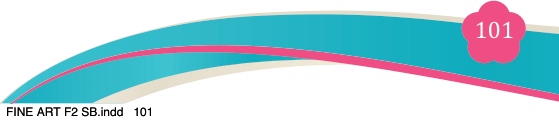
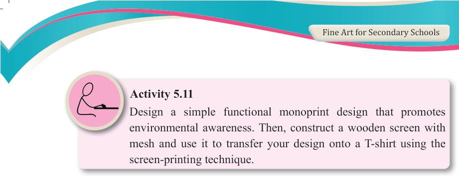

Fine Art for Secondary Schools

101

Student’s Book Form Two



Activity 5.11
Design a simple functional monoprint design that promotes environmental awareness. Then, construct a wooden screen with mesh and use it to transfer your design onto a T-shirt using the screen-printing technique.
Approaches to analysing simple functional monoprints
(a) Aesthetic and artistic analysis
This approach focuses on the visual appeal and artistic value of the monoprint. It examines the design elements such as composition, texture, colour, pattern, and form. The goal is to evaluate how well the print reflects the artist’s vision and the degree of creativity involved in the design. Questions to consider might include:
(i) How does the design contribute to the overall aesthetic of the object?
(ii) What visual effects or textures are achieved through the monoprinting technique?
(iii) Does the design communicate a particular theme or message?
(b) Functionality and practicality
This approach evaluates how well the monoprint serves its intended function. Since
functional monoprints are meant to be more than just decorative, this analysis considers the usability and practicality of the printed item. Key factors include
durability, wearability (for textile prints), and suitability for the purpose. Questions
to consider could include:
(i) How does the print contribute to the function of the object (e.g., a printed t-shirt, packaging, or interior decor)?
(ii) Is the print durable enough to withstand normal use, such as washing, handling, or wear?
(iii) How does the design enhance the usability of the object (e.g., ease of identification, usability in a business context)?
(c) Cultural and contextual relevance
This approach examines the socio-cultural impact of the monoprint, analysing
how it relates to the target audience and context. Functional monoprints are often
designed with specific cultural, social, or environmental factors in mind. The
04/08/2025 13:54